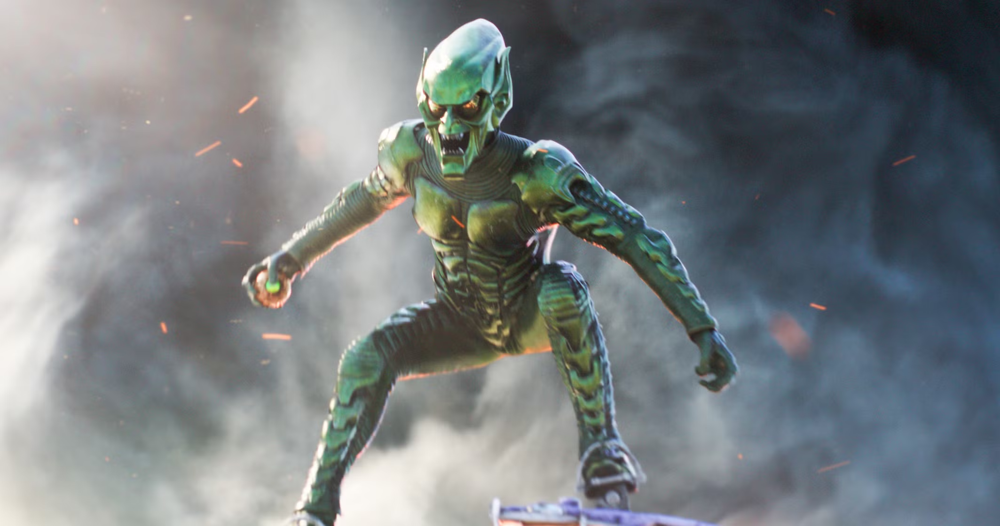

TIMES SQUARE, NEW YORK — Panic spread across several Midtown districts late Tuesday evening after multiple witnesses reported sightings of a mysterious armored figure flying above the city skyline. Authorities have not officially identified the individual, but many residents fear the return of the criminal figure commonly referred to as the Green Goblin. The first reports emerged shortly after sunset when pedestrians near Times Square observed flashes of green light moving rapidly between skyscrapers. Several eyewitnesses described seeing a figure standing atop what appeared to be a high-speed glider, traveling at dangerous speeds through crowded airspace. According to local residents, loud explosions were heard moments later near an abandoned industrial complex on the west side of Manhattan. Emergency responders were dispatched to the area, where investigators discovered damage consistent with small explosive devices. Officials have not confirmed the source of the explosions. Business owners in nearby districts reported temporary evacuations as law enforcement secured several blocks around the incident site. No fatalities were reported, though a number of civilians received treatment for minor injuries caused by panic and falling debris. Social media platforms quickly filled with videos allegedly showing the armored figure maneuvering through the city skyline. While the authenticity of these recordings remains under investigation, experts suggest that the footage bears similarities to previous Green Goblin sightings reported throughout New York City. Several witnesses claimed the mysterious figure appeared to be searching for someone. Others reported seeing Spider-Man entering the area shortly before the explosions occurred. Authorities have not commented on whether the two incidents are connected. The New York Police Department has increased patrols throughout Midtown and urged citizens to report any suspicious aerial activity immediately. Officials also advised residents to avoid approaching unidentified individuals displaying advanced technology or weapons. Security analysts warn that the appearance of highly advanced flight equipment raises serious concerns regarding public safety. The technology observed during the incident appears to exceed the capabilities of commercially available systems, leading investigators to question its origin. As the investigation continues, many New Yorkers remain concerned that the city's most dangerous threats are becoming increasingly bold. The possibility of the Green Goblin's return has renewed fears among residents who remember previous attacks associated with the masked criminal. For now, authorities continue to gather evidence and review surveillance footage from nearby buildings. Until more information becomes available, citizens are advised to remain vigilant and immediately report any unusual activity.
GREEN GOBLIN RETURNS TO THE SKIES
Citizens Report Sightings Of Armored Figure Above Midtown

EDITORIAL COMMENT
Let's be perfectly clear. For years, New York has been forced to tolerate masked vigilantes and costumed criminals turning our streets into their personal battleground. Now, reports suggest that the Green Goblin may have returned, bringing yet another wave of fear and uncertainty to our city. Where did this technology come from? Who is responsible for allowing individuals with military-grade equipment to operate above one of the most densely populated cities in the world? And perhaps the most important question of all: Why does Spider-Man always seem to appear whenever these incidents occur? Coincidence? Maybe. But New Yorkers deserve answers, not excuses. Until someone provides accountability, this city will continue to suffer the consequences of masked individuals operating beyond the reach of the law.
— J. Jonah Jameson
Editor-in-Chief, The Daily Bugle